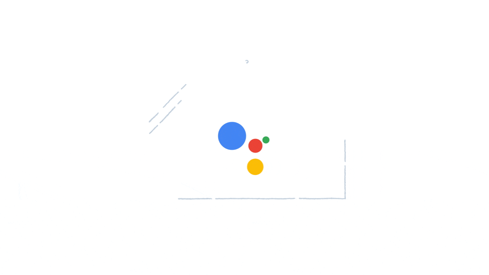

Virtual Voice Assistants
Apple Siri, Amazon Alexa, Google Assistant, and Microsoft Cortana
One example of disruptive technology is Natural Language Processing (NLP). It is a branch of artificial intelligence, which allows humans to communicate (effectively) and interact with computers through natural language (Garbade, 2018). With NLP and its computational linguistics and machine learning models, computers can understand the human language that comes as text or voice data (IBM Cloud Education, 2020). This technology offers hassle-free human-computer interaction and digital assistance to its users. Bolaños (2021) mentioned that the common uses of NLP are translation, speech recognition, sentiment analysis, chatbots, Question-Answer systems, text summarization, market intelligence, text classification, and grammar checking.
Apps That Use NLP
Apple Siri

Z-Light. (n.d.). Is a ball by Siri [GIF]. Dribbble. Retrieved December 11, 2021, from https://dribbble.com/shots/4564821-Is-a-ball-by-Siri
The idea of a conversational way to interact with all information in the world sprouted in the early 1990s. It was the first version of Siri. SRI International, which later became Siri, Inc., developed the software. But then it was acquired by Apple in 2010 and debuted in 2011. The said virtual assistant features direction navigation, searching the web, relaying information, changing settings, scheduling events and reminders, solving math equations, sending money, and many more. The software company Scansoft merged with Nuance Communications in 2005 recruited a voice talent named Susan Bennett. She recorded her voice saying sentences and phrases for four hours each day for a month. Then, the company linked it together to create the voice of Siri. In addition, Karen Jacobsen also voiced the original Australian voice of Siri. For the British male voice of Siri, it was Jon Biggs who did it. In iOS 11, Apple develops a new female voice with deep learning technology from hundreds of candidates and their hours of speech. Siri works by collecting audio and converting it into a data file then sending it to Apple servers. Once the servers receive the voice data, it will go through flowcharts formed by a vast database of questions and answers.
Amazon Alexa

Gannon, C. (2018, April 18). Animation Waiting GIF [GIF]. GIPHY. Retrieved December 11, 2021, from https://giphy.com/gifs/2zZNmrvguyPTS06rK0
Another example of a virtual assistant is called Amazon Alexa. Its features are almost the same as Siri and others of its kind. But, Alexa is more of a home assistant than Siri, which is a digital assistant specifically found in iPhones. According to Kozuch (2021), Alexa currently possesses more than 3,000 skills available, which let you control the best smart home devices. Some of the best skills Alexa has are Alexa guard, getting exclusive Amazon deals, calling another Alexa-enabled device, and it can also send a virtual hug. This software works when it hears a trigger word followed by the user command or request. It can also be customized to respond using 20 language/dialect combinations. Alexa uses natural language interpretation as well to process and act upon requests.
Google Assistant
Sasha. (n.d.). Google assistant [GIF]. Working Not Working. Retrieved December 11, 2021, from https://workingnotworking.com/projects/135520-google-assistant
It is a virtual voice assistant introduced in 2016 during Google’s I/O conference held in California (TechRepublic Staff, 2021). It also functions like Apple’s Siri when it comes to voice commands. However, Google Assistant can handle more requests and queries from its users since they linked it to Google Search, which holds many resources (Sullivan, 2017). It allows for task completion, search assistance, and it is also capable of keeping up with the conversation. According to Rutnik (2021), Google Assistant is already built-in in most gadgets, and it may also connect to other smart home devices, including lamps and security cameras. While this voice assistant usually deals with general tasks, one may also use its services for entertainment purposes.
Microsoft Cortana

Warren, T. (2017, January 3). Nissan teases Microsoft's Cortana assistant in its cars [GIF]. The Verge. Retrieved December 11, 2021, from https://www.theverge.com/ces/2017/1/3/14155262/nissan-microsoft-cortana-cars-teaser-video-ces-2017
Microsoft also released a virtual voice assistant called Cortana. Initially, it was intended to be used in Windows Phone in 2014 but integrated later with Windows 10 PCs in 2015 (Lyons & White, 2021). Like any virtual assistant, Cortana helps its users in various ways. For instance, it provides assistance in organizing and managing their engagements daily by interpreting text or voice inputs. However, it receives less attention versus its rival virtual voice assistants from Apple and Google.
Cortana offers the same general services one would expect from a voice assistant, and according to Kapko (2018), Cortana could even be a substantial assistant for business-related matters of users. It also boasts integration with Windows and Office. It could help assist its users when working on apps including, but not limited to, Office 365, Outlook, Gmail, and LinkedIn.